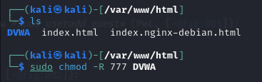
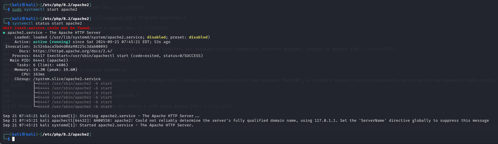
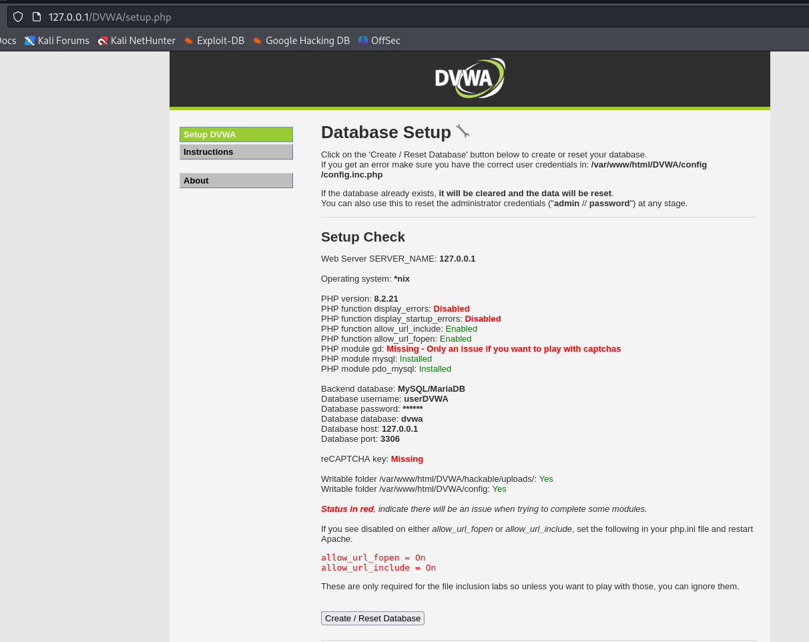

Front matter
lang: ru-RU
title: Ind Project Stage №2
author: |
Anna D. Zaytseva\inst{1,3}
institute: |
\inst{1}RUDN University, Moscow, Russian Federation
date: NEC--2024, 21 September, Moscow
toc: false
slide_level: 2
theme: metropolis
header-includes:
- \metroset{progressbar=frametitle,sectionpage=progressbar,numbering=fraction}
- '\makeatletter'
- '\beamer@ignorenonframefalse'
- '\makeatother'
aspectratio: 43
section-titles: true
Цель работы
Цель работы --- Установка DVWA.
Задание
Теоретические выкладки
DVWA - это уязвимое веб-приложение, разработанное на PHP и MYSQL.
Некоторые из уязвимостей веб приложений, который содержит DVWA:
- Брутфорс: Брутфорс HTTP формы страницы входа - используется для тестирования инструментов по атаке на пароль методом грубой силы и показывает небезопасность слабых паролей.
- Исполнение (внедрение) команд: Выполнение команд уровня операционной системы.
- Межсайтовая подделка запроса (CSRF): Позволяет «атакующему» изменить пароль администратора приложений.
- Внедрение (инклуд) файлов: Позволяет «атакующему» присоединить удалённые/локальные файлы в веб приложение.
- SQL внедрение: Позволяет «атакующему» внедрить SQL выражения в HTTP из поля ввода, DVWA включает слепое и основанное на ошибке SQL внедрение.
- Небезопасная выгрузка файлов: Позволяет «атакующему» выгрузить вредоносные файлы на веб сервер.
- Межсайтовый скриптинг (XSS): «Атакующий» может внедрить свои скрипты в веб приложение/базу данных. DVWA включает отражённую и хранимую XSS.
- Пасхальные яйца: раскрытие полных путей, обход аутентификации и некоторые другие.
DVWA имеет четыре уровня безопасности, они меняют уровень безопасности каждого веб приложения в DVWA:
- Невозможный — этот уровень должен быть безопасным от всех уязвимостей. Он используется для сравнения уязвимого исходного кода с безопасным исходным кодом.
- Высокий — это расширение среднего уровня сложности, со смесью более сложных или альтернативных плохих практик в попытке обезопасить код. Уязвимости не позволяют такой простор эксплуатации как на других уровнях.
- Средний — этот уровень безопасности предназначен главным образом для того, чтобы дать пользователю пример плохих практик безопасности, где разработчик попытался сделать приложение безопасным, но потерпел неудачу.
- Низкий — этот уровень безопасности совершенно уязвим и совсем не имеет защиты. Его предназначение быть примером среди уязвимых веб приложений, примером плохих практик программирования и служить платформой обучения базовым техникам эксплуатации.
Выполнение этапа индивидуального проекта
Steps 1-6
В установленной при выполнении предыдущего этапа индивидуального проекта операционной системе настроим DVWA.
 { #fig:001 width=70% }
{ #fig:001 width=70% }
{ #fig:002 width=70% }
 { #fig:003 width=70% }
{ #fig:003 width=70% }
 { #fig:004 width=70% }
{ #fig:004 width=70% }
 { #fig:005 width=70% }
{ #fig:005 width=70% }
 { #fig:006 width=70% }
{ #fig:006 width=70% }
Steps 7-9
Настроила базу данных:
 { #fig:007 width=70% }
{ #fig:007 width=70% }
Для выхода из режима проверки в консоли нажимаю q.
 { #fig:008 width=70% }
{ #fig:008 width=70% }
 { #fig:009 width=70% }
{ #fig:009 width=70% }
Steps 10-12
Настроила сервер apache2:
 { #fig:010 width=70% }
{ #fig:010 width=70% }
 { #fig:011 width=70% }
{ #fig:011 width=70% }
{ #fig:012 width=70% }
Steps 13-14
DVWA, Apache и база данных настроены, поэтому теперь остаётся открыть браузер и запустить веб-приложение, введя в адресной строке 127.0.0.1/DVWA (Рис. [-@fig:013]):
{ #fig:013 width=70% }
 { #fig:014 width=70% }
{ #fig:014 width=70% }
Но необходимо было авторизоваться с помощью предложенных по умолчанию данных ("admin // password") и оказаться на домашней странице веб-приложения. На этом установка окончена.
Выводы
Приобрела практические навыки по установке уязвимого веб-приложения DVWA.
Библиография
- Методические материалы курса
{.standout}
Спасибо за внимание!